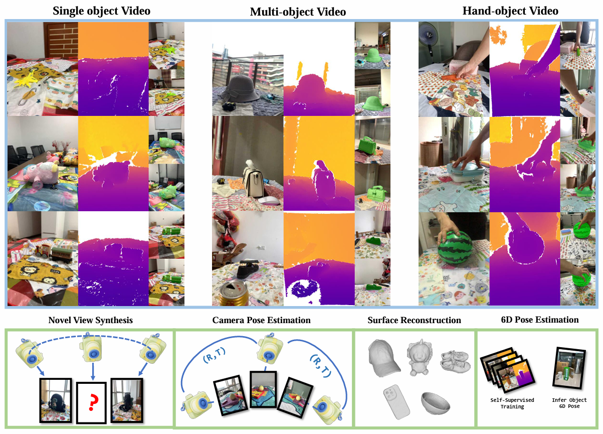
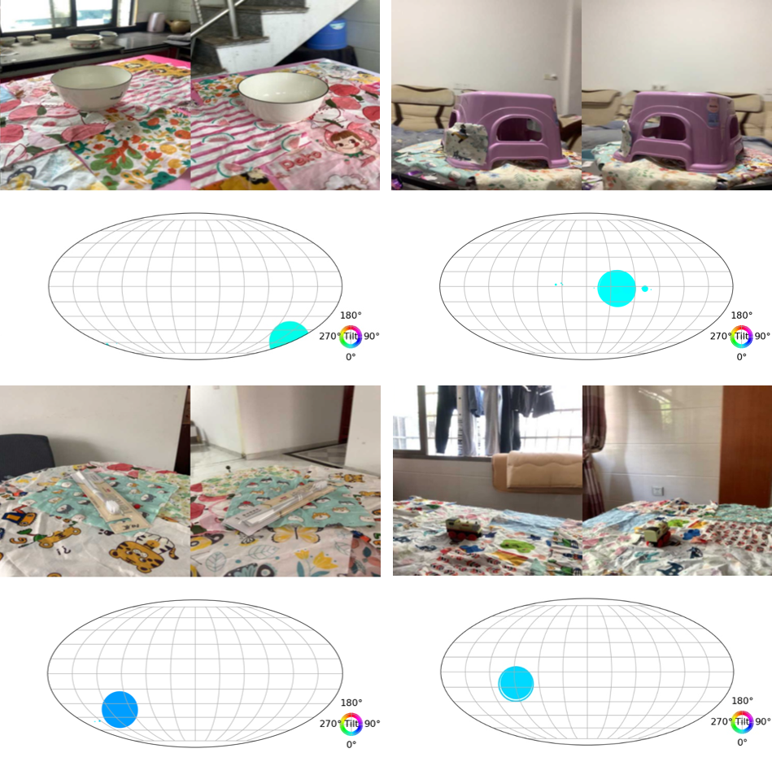

We introduce a new RGB-D object dataset captured in the wild called WildRGB-D. Unlike most existing real-world object-centric datasets which only come with RGB capturing, the direct capture of the depth channel allows better 3D annotations and broader downstream applications.

WildRGB-D comprises large-scale category-level RGB-D object videos, which are taken using an iPhone to go around the objects in 360 degrees.
It contains around 8500 recorded objects and nearly 20000 RGB-D videos across 46 common object categories.
These videos are taken with diverse cluttered backgrounds with three setups to cover as many real-world scenarios as possible: (i) a single object in one video; (ii) multiple objects in one video; and (iii) an object with a static hand in one video.
The dataset is annotated with object masks, real-world scale camera poses, and reconstructed aggregated point clouds from RGBD videos.
We benchmark four tasks with WildRGB-D including a) novel view synthesis, b) camera pose estimation, c) object 6d pose estimation, and d) object surface reconstruction. Our experiments show that the large-scale capture of RGB-D objects provides a large potential to advance 3D object learning.
Per-category number of objects and different types of videos.
Total number of objects and different types of videos.
Camera poses distribution visualization of different kinds of Object 6D pose dataset and WildRGB-D dataset.
RGB-D image sequence with mask annotation and point cloud reconstruction visualization.
Our 360-degree camera trajectory visualization.
NeRF based and Generalizable NeRFs algorithms are evaluated in single-scene and cross-scene respectively. Depth supervised NVS achieves consistently improved results. WildRGB-D offers a new platform for evaluating view synthesis approaches using RGB or RGB-D data.
Our proposed large-scale category-level WildRGB-D dataset can serve as training datasbase for generalizable camera pose estimation. We adopt different pose estimation approaches RelPose and RelPose++ to evaluate their capability of estimating relative camera poses in a sparse setting. And we’ve witnessed the remarkable generalization performance when estimating on unseen categories.
We conduct object surface reconstruction in WildRGB-D dataset with RGB or RGB-D videos and object masks through Instant-NGP and Neusfacto. Results show that our depth information endow reconstruction with more accurate precision and SDF-based algorithm performs better in this setting.
We exploit the self-supervised algorithm in category-level object 6D pose estimation with large-scale RGB-D images in our dataset and then evaluate the pre-trained model on the Wild6D test set. We show our dataset can facilitate 6D pose estimation even without training labels, and we also study its generalization ability to the out-of-distribution test set.